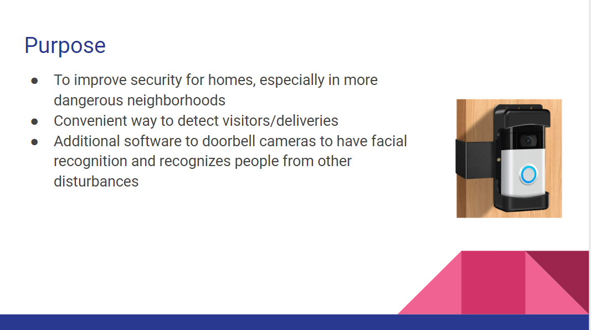
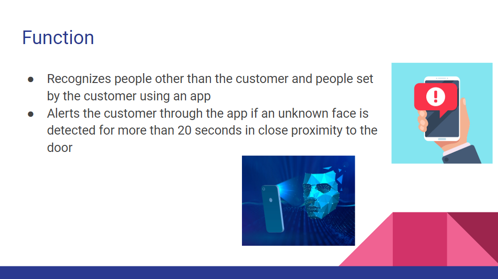
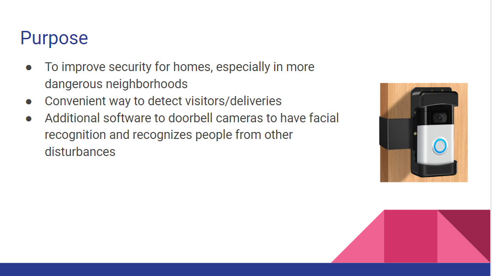
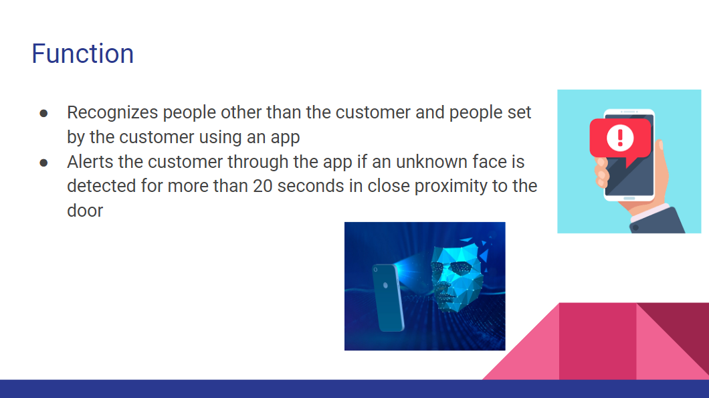

This week we learned about business engineering. We learned that there are various jobs regarding finances, laws, and aesthetic when it comes to engineered products, in order to give the consumer a good experience. We made a sales pitch on a procuct we imagined. Our group's product was Facial Recognition In Security Camera (FRISC), which was a door camera that used facial recognition to increase home security by identifying strangers or suspicous activity.
*1/17/2023 - 1/20/2023*
This week we learned about chemical engineering. We learned about how chemical engineers work on scaling up chemical processes and engineering the machines to produce chemicals, such as medicines, beers, etcetera, whereas chemists work on
creating the actual chemical reactions. For our project we created a non-Newtonian fluid with cornstarch and water. It resulted in a fluid that acted as a solid with more force, and as a liquid with less force.
This week we began planning our second semester engineering project. We decided to pursue creating the Arduino Car because of the multiple
disciplines that would be required to build it. We filled out our project proposal document writing about the purpose, inspiration, research, bill of materials, and costs of our project.
*1/30/2023 - 2/3/2023*
This week we worked on CADs for our arduino car. We used premade components on TinkerCAD based on
our bill of materials. We tried to make our car functional, but also aesthetic by adding a cover
over all the electrical parts.
 


